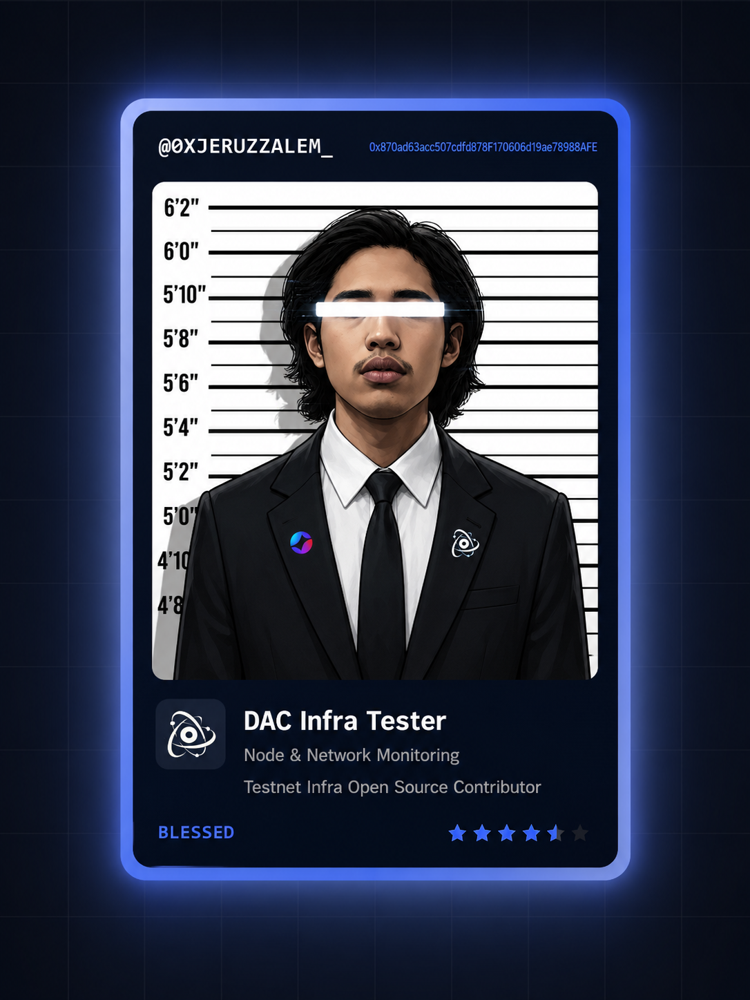

DAC Enode Intelligence Watcher
Infrastructure Observation Dashboard
A visual inspection layer for DAC official enode monitoring, manual backfill history, rotation intelligence, anomaly detection, and latest watcher state.

A visual inspection layer for DAC official enode monitoring, manual backfill history, rotation intelligence, anomaly detection, and latest watcher state.
